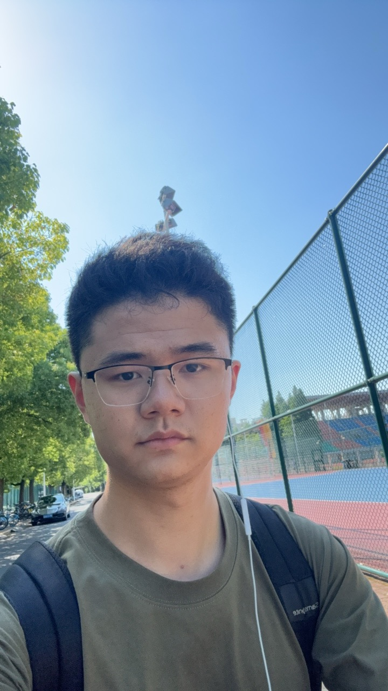
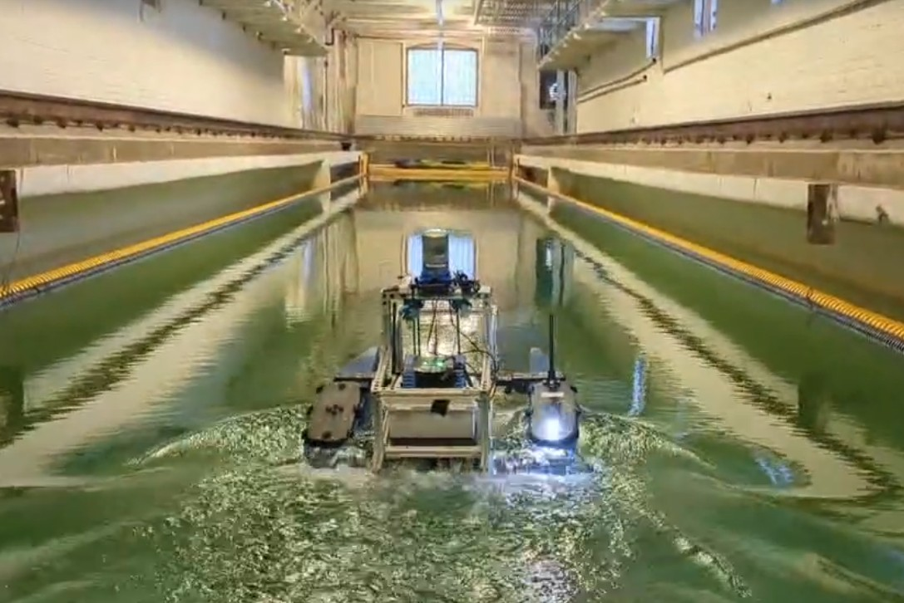
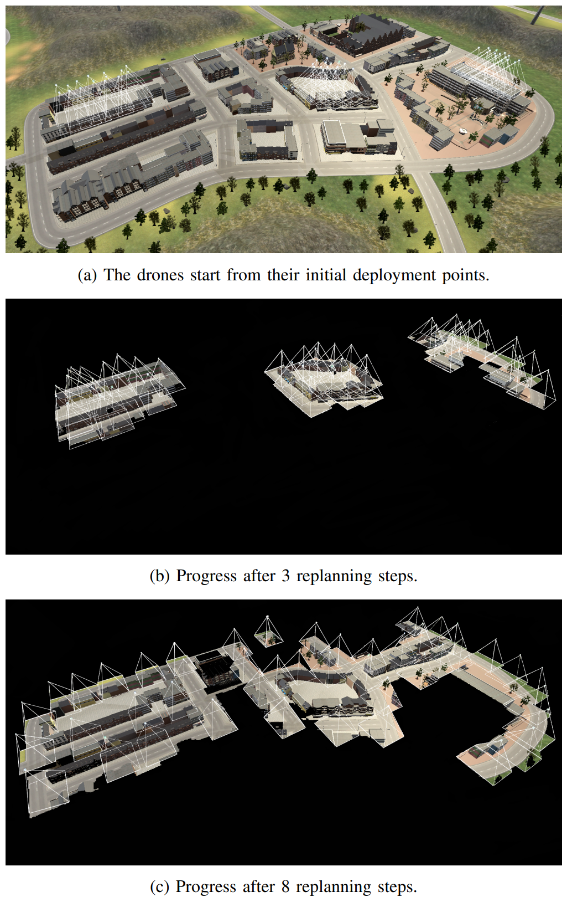
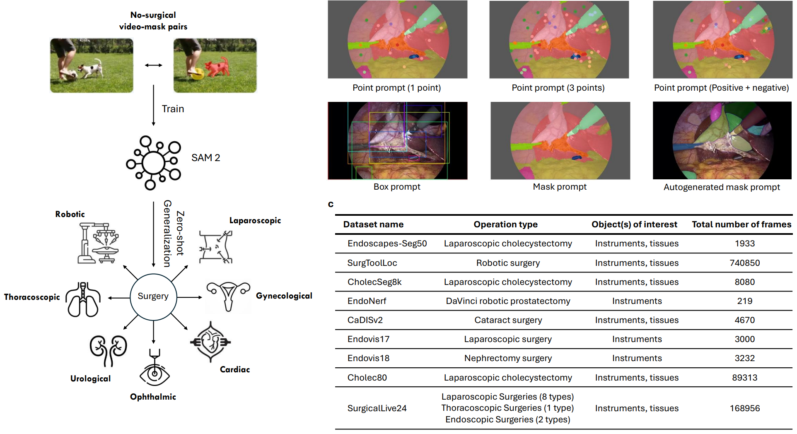
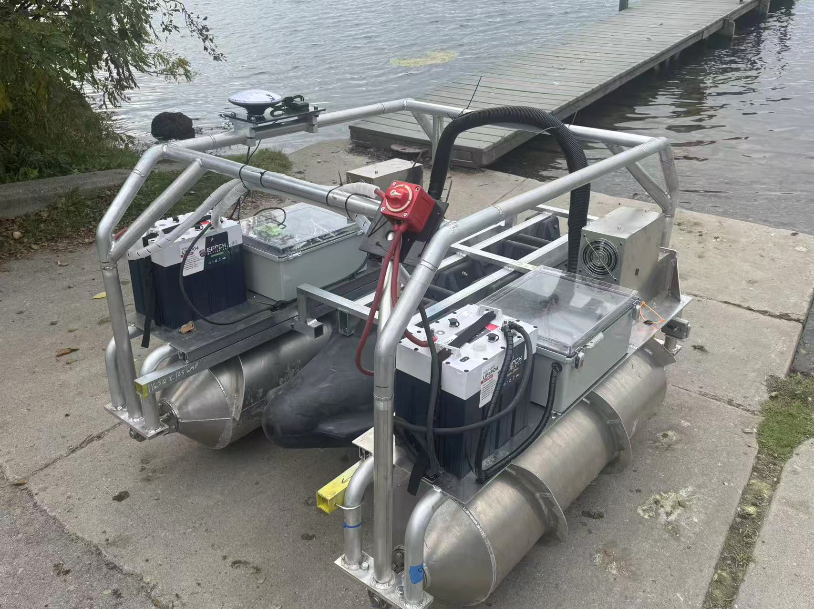
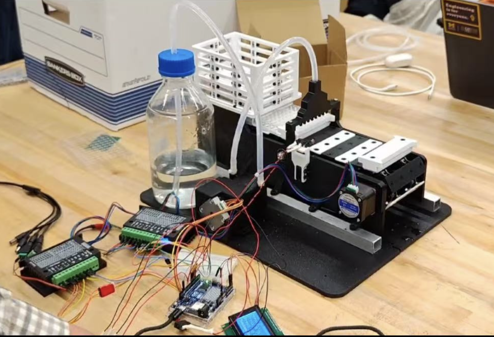
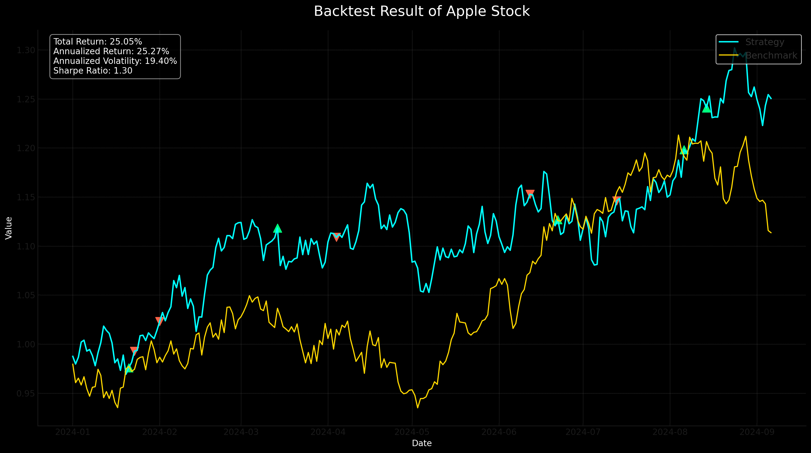
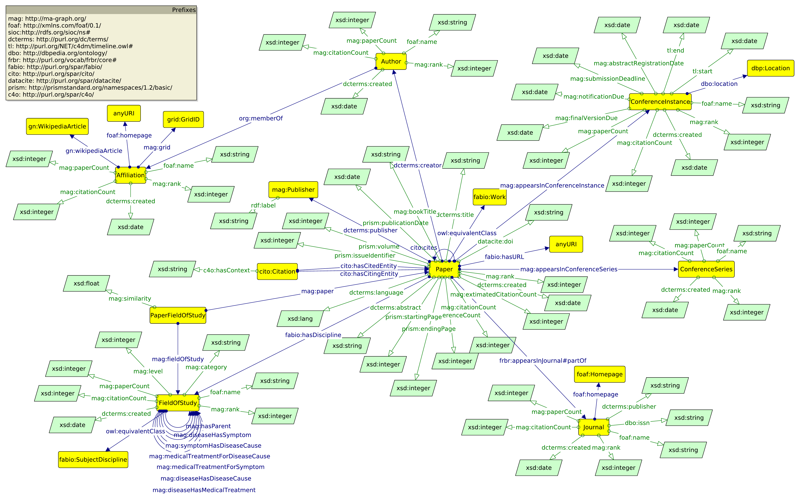
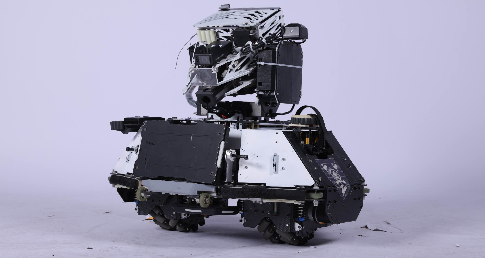

Incoming CMU MSR student interested in robot learning, perception, and sim-to-real robotics
Incoming M.S. in Robotics student at Carnegie Mellon University with a background in mechanical engineering, ECE, and computer science. Interested in robot learning for real-world robotics, especially perception, closed-loop control, sim-to-real transfer, and deep learning.
I am an incoming M.S. in Robotics student at Carnegie Mellon University with a background in mechanical engineering, ECE, and computer science. My interests lie in robot learning for real-world robotics, especially perception, closed-loop control, sim-to-real transfer, and deep learning.
My current work spans autonomous surface vehicle perception and control, multi-robot simulation and active SLAM, and visual perception for temporally evolving scenes. I am particularly interested in building robotic systems that can learn robust skills and generalize beyond clean lab settings.
Current Activities:

Curly Lab, University of Michigan | May 2025 - Present
Advisor: Prof. Maani Ghaffari
Co-author of RAL paper (under review)
Working with Prof. Maani Ghaffari at the Curly Lab (Computational Robotics Learning and Yielding Lab), University of Michigan. Collaborating with PhD students and post-docs on cutting-edge autonomous systems research.
Autonomous Surface Vehicles (ASVs) face significant challenges in real-world deployment: accurate perception of dynamic water environments, robust control under environmental disturbances (waves, currents, wind), and efficient sensor calibration for multi-modal data fusion. Traditional control methods struggle with model uncertainties and external disturbances in aquatic environments.
Perception Improvements: Achieved 41.3% mAP@0.5 in object detection and improved multi-object tracking ID F1-score from ~30% to ~50%, enabling reliable obstacle detection in challenging water conditions.
Control Advancements: Lie-MPC framework reduced path tracking RMSE by ~20% and achieved <10% steady-state error, significantly outperforming traditional MPC in handling non-linear dynamics.
System Efficiency: Streamlined deployment pipeline from ~15 steps to ~6 steps, reducing setup time from hours to minutes and achieving <3.4% sensor calibration error for LiDAR-IMU-camera fusion.
Research Contribution: Contributing to a RAL paper (under review) that advances the state-of-the-art in robust trajectory tracking for autonomous marine vehicles, with potential applications in ocean monitoring, search and rescue, and environmental research.

IRAL Lab, University of Michigan | Oct 2024 - Present
Advisor: Prof. Vasileios Tzoumas
Working with Prof. Vasileios Tzoumas at the IRAL Lab (Intelligent Robotics and Autonomy Lab), University of Michigan. Collaborating on distributed decision-making and multi-agent coordination research.
Multi-drone systems face critical challenges in resource-constrained environments: efficient task allocation among multiple agents, communication bandwidth limitations, computational resource management, and active SLAM in dynamic environments. Traditional centralized approaches don't scale well, and existing simulation tools lack integration between photorealistic rendering and multi-agent coordination.
Simulation Infrastructure: Rebuilt Unity + AirSim + ROS multi-drone simulator, fixing critical API timing issues and sensor synchronization problems. This provides a robust platform for testing multi-agent algorithms in photorealistic environments.
Active SLAM Integration: Successfully implemented SlideSLAM in ROS1 and initiated ROS2 port, enabling real-time collaborative mapping with photorealistic sensor data from AirSim.
Theoretical Foundation: Studied submodular maximization and EXP3-based greedy schemes for distributed decision-making, laying groundwork for provably efficient multi-agent coordination under resource constraints.
Future Impact: This research will enable scalable drone swarms for applications including search and rescue, environmental monitoring, and infrastructure inspection where communication and computational resources are limited.

Shanghai Jiao Tong University | Apr 2024 - Dec 2024
Advisor: Prof. Yutong Ban
Co-author of paper accepted in NPJ Digital Surgery (Oct 2025)
Working with Prof. Yutong Ban at Shanghai Jiao Tong University's Medical Robotics Lab. Part of a collaborative research team focusing on AI applications in surgical medicine and medical image analysis.
Foundation models like SAM (Segment Anything Model) show great promise for medical applications, but their effectiveness in surgical video analysis remains unclear. Surgeons need reliable, systematic guidelines for implementing these models in clinical settings. Key challenges include: accurate segmentation of surgical tools and anatomy in endoscopic videos, handling occlusions and blood/smoke artifacts, and establishing best practices for clinical deployment.
Systematic Evaluation: Conducted comprehensive testing of SAM across multiple surgical video datasets, providing the first systematic evaluation of foundation models for endoscopic surgery analysis.
Clinical Guidelines: Developed evidence-based implementation guidelines that enable surgeons and medical AI researchers to effectively deploy SAM in clinical settings, reducing trial-and-error and accelerating clinical adoption.
Best Practices: Established standardized protocols for prompt engineering, fine-tuning strategies, and quality assessment metrics specifically for surgical video segmentation tasks.
Publication Impact: Contributing to NPJ Digital Surgery (Nature portfolio), a high-impact journal that bridges AI research and clinical practice. This work will guide future developments in computer-assisted surgery and surgical robotics.
IEEE Robotics and Automation Letters (RAL) - Under Review
Proposed MPC framework achieving ~20% RMSE improvement and <10% steady-state error in real-world ASV path tracking.
NPJ Digital Surgery - Accepted (October 2025)
Comprehensive evaluation of SAM for surgical video analysis, providing systematic guidelines for implementation in clinical settings.

Lacuum.ai | Research Collaboration | May 2025 – Aug 2025
Research collaboration at Lacuum.ai, a cutting-edge robotics startup developing autonomous navigation systems. Working directly with the robotics engineering team on real-world product development and deployment.
Developing reliable autonomous robotic systems requires precise sensor calibration, accurate dynamic modeling, and robust real-time control. Commercial robotic platforms face challenges in: multi-sensor calibration (IMU, encoders, cameras), system identification for accurate physics-based models, integrated hardware-software design, and real-time embedded control implementation. Any errors in calibration or modeling cascade through the control system, leading to poor performance.
Sensor Calibration: Performed comprehensive calibration across IMU, wheel encoders, and onboard sensors, establishing accurate sensor fusion for reliable state estimation in real-world conditions.
System Identification: Built physics-based dynamic models through systematic testing and parameter estimation, enabling predictive control and improving trajectory tracking accuracy.
Hardware Integration: Designed electrical circuits and developed integrated hardware layouts, ensuring robust sensor connections and power management for field deployment.
Advanced Control: Implemented both PID controllers for baseline performance and Lie-MPC for advanced trajectory tracking on embedded hardware. Achieved significant improvements in tracking stability and reduced steady-state errors.
Industry Impact: This work directly contributes to Lacuum.ai's commercial product, enabling reliable autonomous navigation for real-world applications in logistics, delivery, and mobile robotics.

University of Michigan, Taubman Nanobody Institute | ME450 Design Project | Aug 2024 - Dec 2024
ME450 Senior Design Project at University of Michigan in partnership with the Taubman Nanobody Institute. Collaborating with biomedical researchers to develop laboratory automation equipment for ELISA testing workflows.
The Taubman Nanobody Institute needed an automated solution for washing 96-well microplates in ELISA (Enzyme-Linked Immunosorbent Assay) testing. Manual rinsing is time-consuming, inconsistent, and prone to human error. Commercial plate washers cost $5,000-$15,000, making them inaccessible for smaller labs. Key technical challenges include: achieving uniform flow distribution across 96 wells, precise mechanical alignment for repeatable dispensing, minimizing wash cycle time while ensuring thorough cleaning, and keeping total cost under $500.
Mechanical Design: Designed complete automated washer system including uniform dispensing head, conveyor mechanism for plate transport, and fluid distribution manifold ensuring <5% variance in flow across all wells.
Engineering Analysis: Conducted CFD (Computational Fluid Dynamics) analysis to optimize flow uniformity and performed mechanical tolerance studies to ensure sub-millimeter alignment accuracy for reliable dispensing.
Automation & Control: Integrated stepper motor-driven motion control, emergency stop system, and user-friendly control interface, achieving <45s wash cycles—3x faster than manual washing.
Cost Innovation: Achieved total cost <$500 (10-30x cheaper than commercial alternatives) while maintaining performance, making automated ELISA washing accessible to resource-constrained research labs.
Lab Impact: Deployed system now enables Taubman researchers to process significantly more samples with improved consistency, accelerating nanobody research and development timelines.

APEXUS Tech LLC | Quantitative Trading Intern | Dec 2024 - Mar 2025
Quantitative Trading Internship at APEXUS Tech LLC, working with quantitative analysts and software engineers to develop algorithmic trading systems. Gained exposure to financial modeling, statistical learning, and high-performance computing in trading applications.
Financial markets are highly complex and noisy, making it difficult to extract consistent alpha (excess returns). Traditional trading strategies often rely on limited factors and fail to adapt to changing market conditions. The challenge is to develop a quantitative model that: combines statistical learning with automated factor discovery, adapts to real-time market signals, maintains robust performance across different market regimes, and achieves risk-adjusted returns (measured by Sharpe ratio).
Hybrid Modeling: Developed a quantitative model combining statistical learning techniques with automated factor-mining algorithms, enabling discovery of non-obvious predictive signals that traditional methods miss.
Software Integration: Implemented the predictive model within a custom trading framework using Python for rapid prototyping and C++ for performance-critical components, achieving real-time execution speeds.
Adaptive System: Enabled adaptive parameter tuning based on real-time market signals, allowing the system to adjust to changing volatility regimes and market microstructure shifts.
Performance Metrics: Back-testing demonstrated 10.3% annualized return with a Sharpe ratio of 1.4 (indicating strong risk-adjusted returns). For context, Sharpe ratio >1.0 is considered good, and 1.4 suggests consistent outperformance with controlled risk.
Technical Skills: Gained hands-on experience in quantitative finance, time-series analysis, optimization algorithms, and production trading system architecture.

Library of Shanghai Jiao Tong University | Data Platform Intern | Sep 2023 - May 2024
Data Platform Internship at Shanghai Jiao Tong University Library, leading a team of 4 developers to create internal academic analytics tools. Collaborating with library administration and research offices to understand faculty data needs.
SJTU researchers lacked a centralized platform to track and analyze publication metrics across the university. Existing commercial solutions (like Web of Science) don't provide institution-specific analytics or integration with university systems. Key challenges include: extracting and parsing large volumes of publication data from Web of Science, building efficient indexing and search infrastructure for 4000+ researchers, developing meaningful analytics and visualization for institutional research assessment, and integrating seamlessly with SJTU's existing web infrastructure.
Team Leadership: Led a cross-functional team of 4 developers, managing project timeline, coordinating with stakeholders, and ensuring deliverable quality—gaining valuable experience in technical project management.
Data Pipeline: Developed robust Python/Java-based extraction and indexing pipeline processing thousands of publications, handling data cleaning, deduplication, and normalization challenges at scale.
Platform Integration: Successfully integrated the analytics platform with SJTU's official website, providing unified researcher access and single sign-on (SSO) authentication for 4000+ faculty members.
University Impact: Platform now serves as the primary tool for SJTU administration to assess research output, track citation metrics, identify collaboration patterns, and support funding allocation decisions.
Technical Growth: Gained experience in full-stack development, database design, API integration, and large-scale data processing—bridging software engineering and data analytics.

Shanghai Jiao Tong University | Mechanical Engineer | 2023
Team Leader and Mechanical Engineer for Shanghai Jiao Tong University's RobMaster competition team. Led a multidisciplinary team of mechanical, electrical, and software engineers competing against 50+ top universities from China and internationally.
RobMaster is China's premier robotics competition featuring real-time combat between autonomous and semi-autonomous robots. Teams must design, build, and program combat robots capable of: high-speed maneuvering and precise motion control, real-time target detection and tracking using computer vision, automated ammunition feeding and firing mechanisms, robust mechanical design to withstand physical impacts, and strategic decision-making under time pressure. The challenge combines mechanical engineering, embedded systems, computer vision, and control theory in an intensely competitive environment.
Team Leadership: Led the team to 3rd place finish against 50+ teams from prestigious institutions including Tsinghua, Peking University, and international universities—demonstrating strong project management and technical leadership skills.
Mechanical Design: Designed complete mechanical structure from ground up: robust chassis for high-speed maneuverability, precision turret system with 360° rotation and elevation control, reliable ammunition feeding mechanism capable of sustained fire rates, all optimized for weight, durability, and performance under combat conditions.
Low-Level Control: Implemented embedded control systems for motor control (DC, BLDC, stepper motors), motion planning algorithms for autonomous navigation, real-time PID tuning for stable turret aiming, and sensor fusion for accurate state estimation.
Vision Integration: Developed and integrated computer vision pipeline for automated enemy detection and tracking, combining hardware (cameras, processing units) with software (object detection, tracking algorithms) in a cohesive mechatronic system.
Competition Impact: Top 8% finish in national competition validated engineering decisions and demonstrated ability to deliver complex robotic systems under strict deadlines and performance requirements.